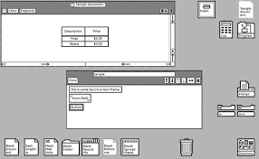

Este texto foi originalmente produzido pelos integrantes do grupo para fins de estudo e usado para a produção de trabalho escolar, portanto a profundidade é mínima em texto, confira a fonte de pesquisa para um estudo mais aprofundado.
A compatibilidade do hardware é uma preocupação particularmente importante se você tem um sistema feito sob medida ou mais velho. Como as especificações de hardware mudam quase diariamente, recomenda-se que seja verificada a compatibilidade em todos os sistemas.
A lista mais recente de hardware suportado pode ser encontrada no Red Hat Hardware Compatibility List.
Anaconda é o instalador usado pelo Red Hat Enterprise Linux, Fedora e seus derivados. Este documento contém as informações necessárias para personalizá-lo.
Os desenvolvedores que desejam expandir a funcionalidade básica do instalador encontrarão informações sobre a arquitetura do Anaconda , seu add-on API e funções auxiliares fornecidas, e exemplos que ajudarão na criação de add-ons personalizados.
Este guia também fornece instruções para aqueles que desejam personalizar os aspectos visuais do instalador, como o esquema de cores do menu de inicialização e plano de fundo ou marca e cromado na interface gráfica do usuário.